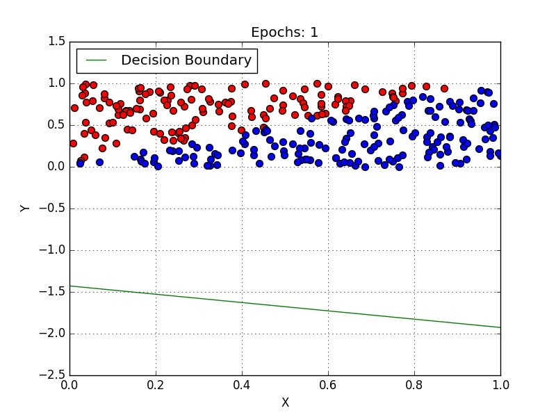
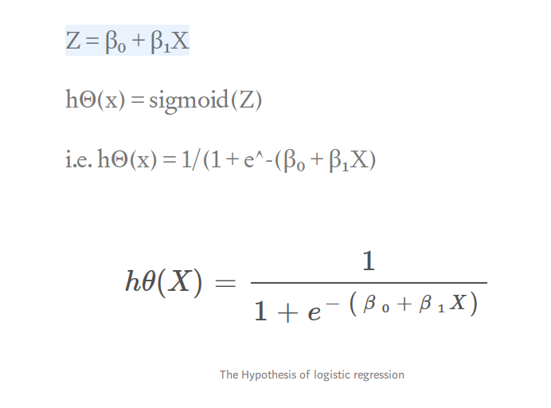

Introduction to Logistic Regression
In this blog, we will discuss the basic concepts of Logistic Regression and what kind of problems can it help us to solve.

Logistic regression is a classification algorithm used to assign observations to a discrete set of classes. Some of the examples of classification problems are Email spam or not spam, Online transactions Fraud or not Fraud, Tumor Malignant or Benign. Logistic regression transforms its output using the logistic sigmoid function to return a probability value.
What are the types of logistic regression ?
1. Binary (eg. Tumor Malignant or Benign)
2. Multi-linear functions failsClass (eg. Cats, dogs or Sheep's)
2. Multi-linear functions failsClass (eg. Cats, dogs or Sheep's)
Logistic regression
Logistic Regression is a Machine Learning algorithm which is used for the classification problems, it is a predictive analysis algorithm and based on the concept of probability.

We can call a Logistic Regression a Linear Regression model but the Logistic Regression uses a more complex cost function, this cost function can be defined as the ‘Sigmoid function’ or also known as the ‘logistic function’ instead of a linear function.
The hypothesis of logistic regression tends it to limit the cost function between 0 and 1. Therefore linear functions fail to represent it as it can have a value greater than 1 or less than 0 which is not possible as per the hypothesis of logistic regression.
The hypothesis of logistic regression tends it to limit the cost function between 0 and 1. Therefore linear functions fail to represent it as it can have a value greater than 1 or less than 0 which is not possible as per the hypothesis of logistic regression.
What is the Sigmoid Function?
In order to map predicted values to probabilities, we use the Sigmoid function. The function maps any real value into another value between 0 and 1. In machine learning, we use sigmoid to map predictions to probabilities.

Hypothesis Representation
When using linear regression we used a formula of the hypothesis i.e.
| hΘ(x) = β₀ + β₁X
For logistic regression we are going to modify it a little bit i.e.
| σ(Z) = σ(β₀ + β₁X)
We have expected that our hypothesis will give values between 0 and 1.

Decision Boundary
We expect our classifier to give us a set of outputs or classes based on probability when we pass the inputs through a prediction function and returns a probability score between 0 and 1.
For Example, We have 2 classes, let’s take them like cats and dogs(1 — dog , 0 — cats). We basically decide with a threshold value above which we classify values into Class 1 and of the value goes below the threshold then we classify it in Class 2.
For Example, We have 2 classes, let’s take them like cats and dogs(1 — dog , 0 — cats). We basically decide with a threshold value above which we classify values into Class 1 and of the value goes below the threshold then we classify it in Class 2.
As shown in the above graph we have chosen the threshold as 0.5, if the prediction function returned a value of 0.7 then we would classify this observation as Class 1(DOG). If our prediction returned a value of 0.2 then we would classify the observation as Class 2(CAT).
Cost Function
We learnt about the cost function J(θ) in the Linear regression, the cost function represents optimization objective i.e. we create a cost function and minimize it so that we can develop an accurate model with minimum error.
If we try to use the cost function of the linear regression in ‘Logistic Regression’ then it would be of no use as it would end up being a non-convex function with many local minimums, in which it would be very difficult to minimize the cost value and find the global minimum.
For logistic regression, the Cost function is defined as:
| −log(hθ(x)) if y = 1
| −log(1−hθ(x)) if y = 0
| −log(1−hθ(x)) if y = 0

The above two functions can be compressed into a single function i.e.
Gradient Descent
Now the question arises, how do we reduce the cost value. Well, this can be done by using Gradient Descent. The main goal of Gradient descent is to minimize the cost value. i.e. min J(θ).
Now to minimize our cost function we need to run the gradient descent function on each parameter i.e.
Now to minimize our cost function we need to run the gradient descent function on each parameter i.e.
Gradient descent has an analogy in which we have to imagine ourselves at the top of a mountain valley and left stranded and blindfolded, our objective is to reach the bottom of the hill. Feeling the slope of the terrain around you is what everyone would do. Well, this action is analogous to calculating the gradient descent, and taking a step is analogous to one iteration of the update to the parameters.
Conclusion
In this blog, I have presented you with the basic concept of Logistic Regression. I hope this blog was helpful and would have motivated you enough to get interested in the topic.